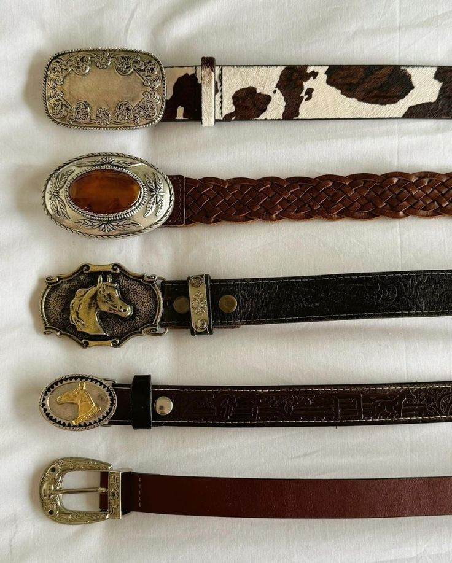
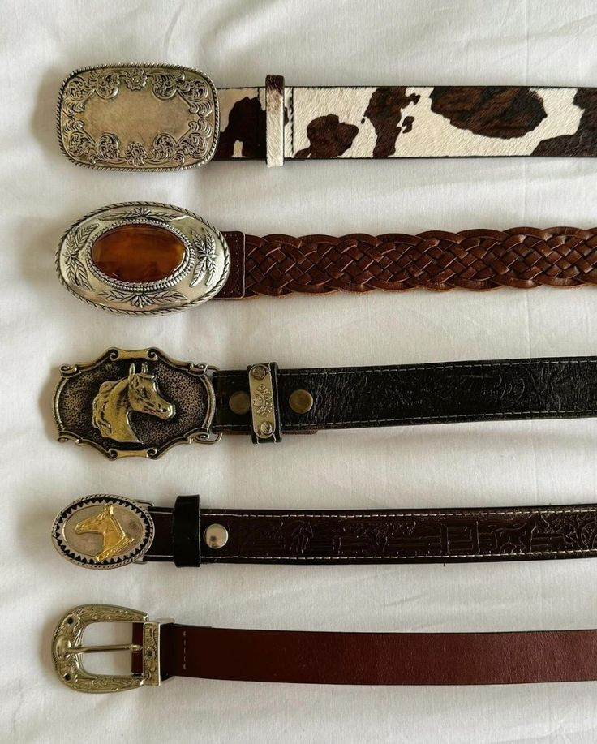

Metallic farver: Futuristisk og glamourøst
Foråret 2025 byder på en bølge af metallic nuancer, hvor især sølv, krom dominerer. Denne trend henter inspiration fra 90’ernes tech-aesthetic, hvilket giver ethvert outfit et moderne og edgy touch. Vi ser metalliske overflader på alt fra tøj til sko og håndtasker, mens detaljer som sølvknapper og skinnende stof fremhæver looket.✨
 
